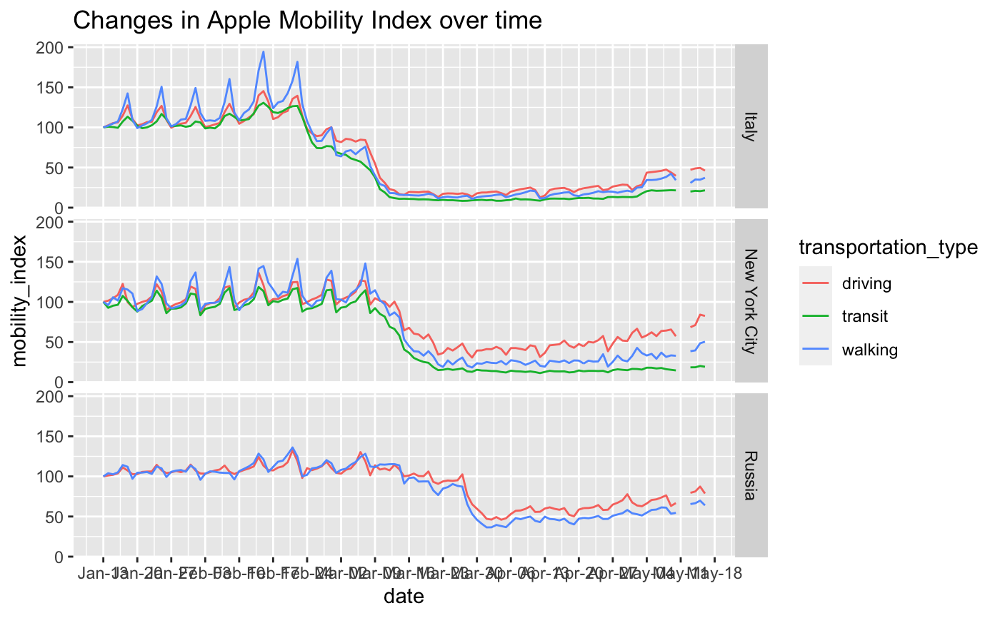
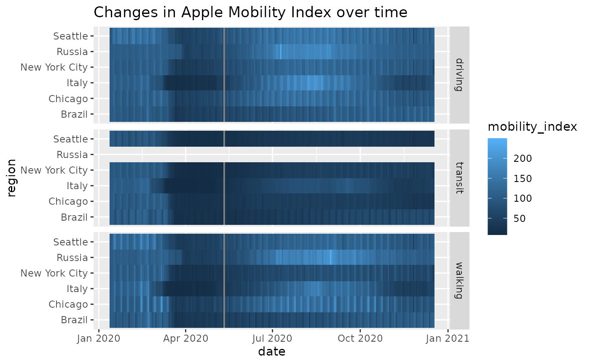
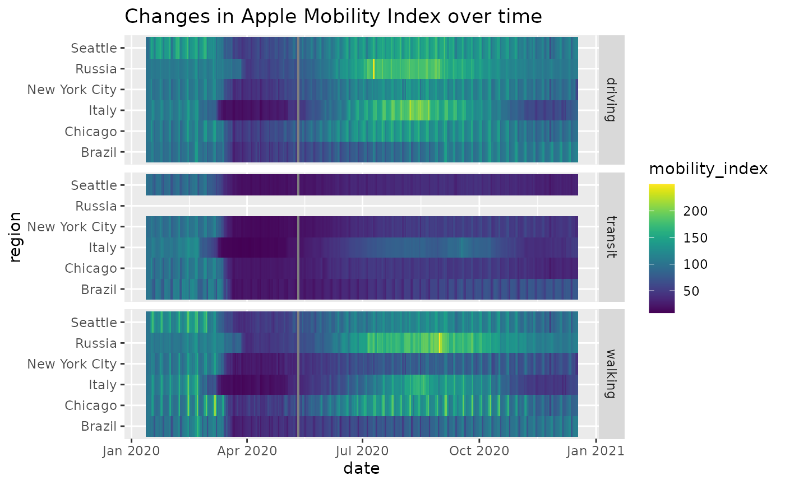
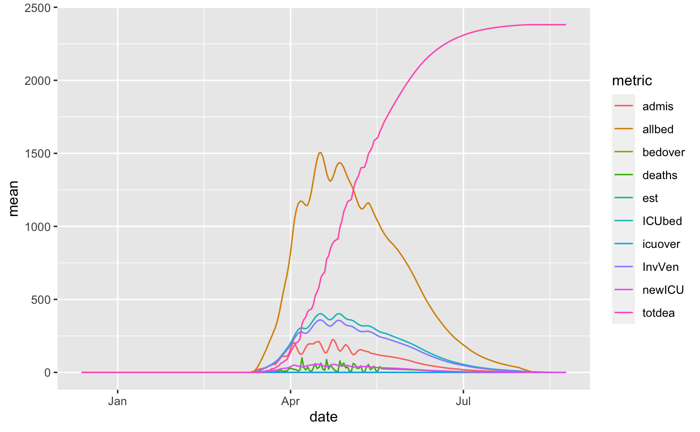
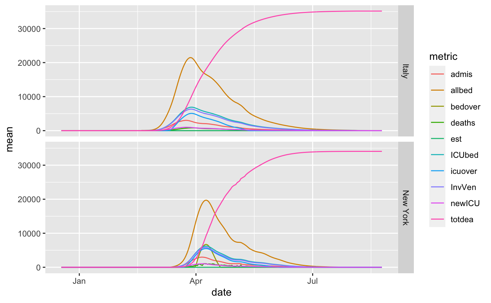

sars2pack: Easy access to and use of iconic COVID-19 data resource
Source:R/sars2pack-package.R
sars2pack-package.RdOn January 30, 2020, the World Health Organization declared coronavirus disease 2019 (COVID-19) a Public Health Emergency of International concern (PHEIC) and within six weeks had characterized the outbreak as a pandemic. Compared to the 2003-2004 severe acute respiratory syndrome (SARS) PHEIC, the COVID-19 pandemic is spreading more quickly and with a much higher death toll. However, the current pandemic is occurring in a more digital and interconnected world. Traditional public health organizations as well as data-mature organizations not traditionally involved directly in public health have rapidly developed digital disease surveillance infrastructuree that provides nearly realtime epidemic tracking data. These data resources have proven invaluable to understanding disease spread, to drive non-pharmacologic intervention (NPI), and, when combined with additional data resources, to project impacts to communities and healthcare systems around the world. Even as the urgency of the initial “hammer” of the COVID-19 pandemic begins to abate, the need for timely, robust, and granular datasets will inform business, policy, and even personal decisions for months or even years to come.
Purpose
The sars2pack R package aims to:
Collect COVID-19 related public health and disease tracking resourcesand provide principled approach date reuse and reproducible computational research.
Provide a data science environment for researchers, media, policy makers, and data scientists to collaborate while promoting reproducible computational research best practices.
Capitalize on the large, existing multidisciplinary data science workforce already familiar with the R programming environment.
Create opportunities for individuals not well-versed in data science to learn and experiment with COVID-19 datasets.
Incorporate examplar workflows that leverage the extensive R data science ecosystem to visualize, analyze, and integrate COVID-19 data resources.
Foo functions
The foo functions ...
Examples
#> # A tibble: 27 x 8 #> name accessor data_type geographical geospatial region resolution url #> <chr> <chr> <list> <lgl> <lgl> <list> <list> <chr> #> 1 Extens… us_hospi… <chr [1]> TRUE TRUE <chr … <chr [1]> https:… #> 2 US cou… us_count… <chr [1]> TRUE FALSE <chr … <chr [3]> https:… #> 3 Corona… coronane… <chr [1]> TRUE FALSE <chr … <chr [2]> https:… #> 4 Our Wo… owid_data <chr [4]> TRUE FALSE <chr … <chr [1]> https:… #> 5 GISAID… cov_glue… <chr [1]> TRUE FALSE <chr … <chr [1]> https:… #> 6 Newick… cov_glue… <chr [1]> FALSE FALSE <chr … <chr [1]> https:… #> 7 US CDC… cdc_exce… <chr [3]> TRUE FALSE <chr … <chr [1]> https:… #> 8 Publis… param_es… <chr [1]> FALSE FALSE <NULL> <NULL> https:… #> 9 Aggreg… cdc_aggr… <chr [1]> TRUE FALSE <NULL> <chr [2]> https:… #> 10 Google… google_m… <chr [1]> TRUE FALSE <chr … <chr [3]> https:… #> # … with 17 more rowsexample(jhu_data)#> #> jhu_dt> res = jhu_data() #> #> jhu_dt> colnames(res) #> [1] "ProvinceState" "CountryRegion" "Lat" "Long" #> [5] "date" "count" "subset" #> #> jhu_dt> head(res) #> # A tibble: 6 x 7 #> ProvinceState CountryRegion Lat Long date count subset #> <chr> <chr> <dbl> <dbl> <date> <dbl> <chr> #> 1 NA Afghanistan 33 65 2020-01-22 0 confirmed #> 2 NA Afghanistan 33 65 2020-01-23 0 confirmed #> 3 NA Afghanistan 33 65 2020-01-24 0 confirmed #> 4 NA Afghanistan 33 65 2020-01-25 0 confirmed #> 5 NA Afghanistan 33 65 2020-01-26 0 confirmed #> 6 NA Afghanistan 33 65 2020-01-27 0 confirmed #> #> jhu_dt> dplyr::glimpse(res) #> Rows: 94,985 #> Columns: 7 #> $ ProvinceState <chr> NA, NA, NA, NA, NA, NA, NA, NA, NA, NA, NA, NA, NA, NA,… #> $ CountryRegion <chr> "Afghanistan", "Afghanistan", "Afghanistan", "Afghanist… #> $ Lat <dbl> 33, 33, 33, 33, 33, 33, 33, 33, 33, 33, 33, 33, 33, 33,… #> $ Long <dbl> 65, 65, 65, 65, 65, 65, 65, 65, 65, 65, 65, 65, 65, 65,… #> $ date <date> 2020-01-22, 2020-01-23, 2020-01-24, 2020-01-25, 2020-0… #> $ count <dbl> 0, 0, 0, 0, 0, 0, 0, 0, 0, 0, 0, 0, 0, 0, 0, 0, 0, 0, 0… #> $ subset <chr> "confirmed", "confirmed", "confirmed", "confirmed", "co…example(apple_mobility_data)#> #> appl__> res = apple_mobility_data() #> #> appl__> colnames(res) #> [1] "geo_type" "region" "transportation_type" #> [4] "alternative_name" "sub-region" "country" #> [7] "date" "mobility_index" #> #> appl__> head(res) #> # A tibble: 6 x 8 #> geo_type region transportation_… alternative_name `sub-region` country #> <chr> <chr> <chr> <chr> <chr> <chr> #> 1 country… Alban… driving NA NA NA #> 2 country… Alban… driving NA NA NA #> 3 country… Alban… driving NA NA NA #> 4 country… Alban… driving NA NA NA #> 5 country… Alban… driving NA NA NA #> 6 country… Alban… driving NA NA NA #> # … with 2 more variables: date <date>, mobility_index <dbl> #> #> appl__> table(res$transportation_type) #> #> driving transit walking #> 393192 28638 45795 #> #> appl__> require(ggplot2) #> #> appl__> pl = res %>% #> appl__+ dplyr::filter(region %in% c('Russia','New York City','Italy')) %>% #> appl__+ ggplot(aes(x=date)) + #> appl__+ geom_line(aes(y=mobility_index,color=transportation_type)) + #> appl__+ scale_x_date(date_breaks = '1 week', date_labels='%b-%d') + #> appl__+ facet_grid(rows=vars(region)) + #> appl__+ ggtitle('Changes in Apple Mobility Index over time') #> #> appl__> pl#> #> appl__> regs_of_interest = c('Seattle', 'New York City', #> appl__+ 'Chicago', 'Italy', #> appl__+ 'Russia', 'UK', #> appl__+ 'Brazil') #> #> appl__> res %>% #> appl__+ dplyr::filter(region %in% regs_of_interest) %>% #> appl__+ ggplot(aes(x=date, y=region, fill=mobility_index)) + #> appl__+ geom_tile() + #> appl__+ facet_grid(rows=vars(transportation_type)) + #> appl__+ ggtitle('Changes in Apple Mobility Index over time')#> #> appl__> if(require(viridis)) { #> appl__+ res %>% #> appl__+ dplyr::filter(region %in% regs_of_interest) %>% #> appl__+ ggplot(aes(x=date, y=region, fill=mobility_index)) + #> appl__+ geom_tile() + #> appl__+ facet_grid(rows=vars(transportation_type)) + #> appl__+ scale_fill_viridis() + #> appl__+ ggtitle('Changes in Apple Mobility Index over time') #> appl__+ }#> #> appl__> if(require(plotly)) { #> appl__+ ggplotly(pl) #> appl__+ }example(healthdata_projections_data)#> #> hlth__> res = healthdata_projections_data() #> #> hlth__> colnames(res) #> [1] "location_name" "date" "metric" "mean" #> [5] "infections_mean" "upper" "infections_upper" "lower" #> [9] "infections_lower" #> #> hlth__> res[sample(1:nrow(res),6),] #> # A tibble: 6 x 9 #> location_name date metric mean infections_mean upper infections_upper #> <chr> <date> <chr> <dbl> <dbl> <dbl> <dbl> #> 1 Piemonte 2020-05-15 icuov… 3.66e1 0 5.20e1 0 #> 2 France 2020-04-21 allbed 1.42e4 0 1.45e4 0 #> 3 Mexico_count… 2020-07-22 totdea 6.68e3 0 1.59e4 0 #> 4 Texas 2020-06-29 newICU 3.69e1 0 1.05e2 0 #> 5 Croatia 2020-04-14 est 0. 280. 0. 356. #> 6 Bremen 2020-03-04 InvVen 0. 0 0. 0 #> # … with 2 more variables: lower <dbl>, infections_lower <dbl> #> #> hlth__> dplyr::glimpse(res) #> Rows: 449,760 #> Columns: 9 #> $ location_name <chr> "Abruzzo", "Abruzzo", "Abruzzo", "Abruzzo", "Abruzzo… #> $ date <date> 2019-12-18, 2019-12-18, 2019-12-18, 2019-12-18, 201… #> $ metric <chr> "allbed", "ICUbed", "InvVen", "deaths", "admis", "ne… #> $ mean <dbl> 0, 0, 0, 0, 0, 0, 0, 0, 0, 0, 0, 0, 0, 0, 0, 0, 0, 0… #> $ infections_mean <dbl> 0, 0, 0, 0, 0, 0, 0, 0, 0, 0, 0, 0, 0, 0, 0, 0, 0, 0… #> $ upper <dbl> 0, 0, 0, 0, 0, 0, 0, 0, 0, 0, 0, 0, 0, 0, 0, 0, 0, 0… #> $ infections_upper <dbl> 0, 0, 0, 0, 0, 0, 0, 0, 0, 0, 0, 0, 0, 0, 0, 0, 0, 0… #> $ lower <dbl> 0, 0, 0, 0, 0, 0, 0, 0, 0, 0, 0, 0, 0, 0, 0, 0, 0, 0… #> $ infections_lower <dbl> 0, 0, 0, 0, 0, 0, 0, 0, 0, 0, 0, 0, 0, 0, 0, 0, 0, 0… #> #> hlth__> summary(res) #> location_name date metric mean #> Length:449760 Min. :2019-12-13 Length:449760 Min. : -25.00 #> Class :character 1st Qu.:2020-02-17 Class :character 1st Qu.: 0.00 #> Mode :character Median :2020-04-20 Mode :character Median : 0.00 #> Mean :2020-04-20 Mean : 295.12 #> 3rd Qu.:2020-06-22 3rd Qu.: 10.54 #> Max. :2020-08-24 Max. :143357.04 #> #> infections_mean upper infections_upper lower #> Min. : 0.0 Min. : -25.0 Min. : 0.0 Min. : -25.0 #> 1st Qu.: 0.0 1st Qu.: 0.0 1st Qu.: 0.0 1st Qu.: 0.0 #> Median : 0.0 Median : 0.0 Median : 0.0 Median : 0.0 #> Mean : 252.7 Mean : 469.4 Mean : 518.1 Mean : 223.7 #> 3rd Qu.: 0.0 3rd Qu.: 20.0 3rd Qu.: 0.0 3rd Qu.: 3.0 #> Max. :247260.6 Max. :207364.1 Max. :618152.5 Max. :115378.4 #> NA's :5580 NA's :5580 #> infections_lower #> Min. : 0 #> 1st Qu.: 0 #> Median : 0 #> Mean : 127 #> 3rd Qu.: 0 #> Max. :208276 #> NA's :5580 #> #> hlth__> #plot the predictions #> hlth__> #> hlth__> regs_of_interest = 'Georgia' #> #> hlth__> library(ggplot2) #> #> hlth__> pl = res %>% #> hlth__+ dplyr::filter(location_name %in% regs_of_interest) %>% #> hlth__+ ggplot(aes(x=date)) + geom_line(aes(y=mean, color=metric)) #> #> hlth__> # plot the "mean" prediction #> hlth__> pl#> #> hlth__> # add 95% confidence bounds #> hlth__> pl + geom_ribbon(aes(ymin=lower, ymax=upper, fill=metric), alpha=0.25)#> #> hlth__> regs_of_interest = c('New York', 'Italy') #> #> hlth__> pl = res %>% #> hlth__+ dplyr::filter(location_name %in% regs_of_interest) %>% #> hlth__+ ggplot(aes(x=date)) + geom_line(aes(y=mean, color=metric)) + #> hlth__+ facet_grid(rows = vars(location_name)) #> #> hlth__> pl